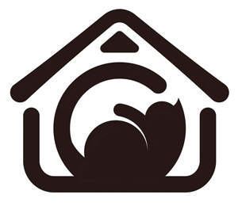

Trade Mark Journal No.2026/003 16 January 2026
UK00004316743 29 December 2025 (21,31)

- Class 21
- Automatic litter boxes for pets; Automatic pet feeders; Cages for carrying pets; Cages for household pets; Cages for pets; Cat litter boxes; Cat litter pans; Combs for animals; Drinking troughs for animals; Electric pet brushes; Electronic pet feeders; Feeding vessels for pets; Filters for use in cat litter pans; Fur brushes for animals; Household containers for storing pet food; Indoor terrariums for animals; Litter boxes for pets; Litter boxes [trays] for pets; Litter scoops for use with pet animals; Litter trays for pet animals; Non-mechanized animal feeders; Non-mechanized pet waterers in the nature of portable water and fluid dispensers for pets; Pet feeding and drinking bowls; Pet paw cleaners, non-electric; Plastics trays for use as litter trays for cats; Scoops for the disposal of pet waste; Toothbrushes for animals; Trays (Litter -) for pets.
- Class 31
- Abrasive liners for cat litter pans; Animal food; Animal foodstuffs; Animal foodstuffs consisting of soya bean products; Animal litter; Animal litter for cats; Animal litter made from hydrated calcium silicate; Animals (Edible chews for -); Aromatic sand for pets [litter]; Aromatic sand [litter] for pets; Bedding and litter for animals; Bedding materials for animals; Cat litter; Cat litter and litter for small animals; Cat litters; Chews for animals (Edible -); Chopped straw for animal bedding; Kitty litter; Litter for animals; Maize for consumption by animals; Peat (Litter -); Peat litter for animals; Pet foods; Pet foodstuffs; Pets (Aromatic sand for -) [litter]; Pets (Sanded paper for -) [litter]; Sanded paper for domestic animals (litter); Sanded paper for pets [litter]; Straw litter; Wood shavings for use as animal litter; Woodshavings for use as animal litter.
Beijing Hanverse Innovations Corporation Ltd.
Representative: MONYIN LIN CHIEN